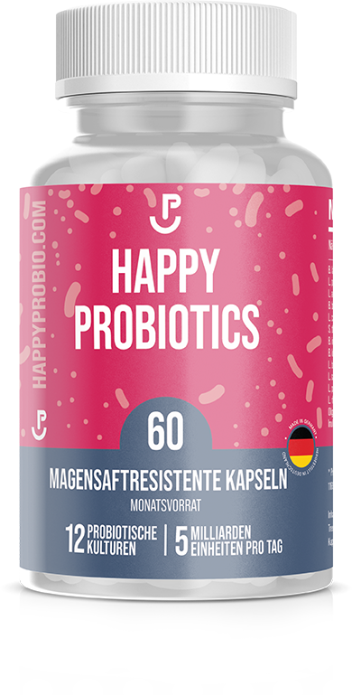

Gastro-Resistant
Der beste Wegweiser ist dein Bauchgefühl
Optimiertes Probiotika mit 14 ausgesuchten Bakterienstämmen für optimale Verträglichkeit. Produziert unter strengen Auflagen in Deutschland.